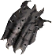
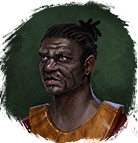

Паучья кожа
Предметы / С врагов
Открыть в интерактивной вики →
| Вес | 1 |
|---|---|
| Цена | 30 |
Описание
Она хоть и паршивая, но чего-то да стоит.

Йохкабал это должно заинтересовать.| Хоть и мерзкая, но какую-то ценность имеет. Джохкабал должен ею заинтересоваться. |
Дроп
Применение
|
Как добыть
Получаем за победу над:
|